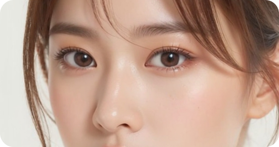
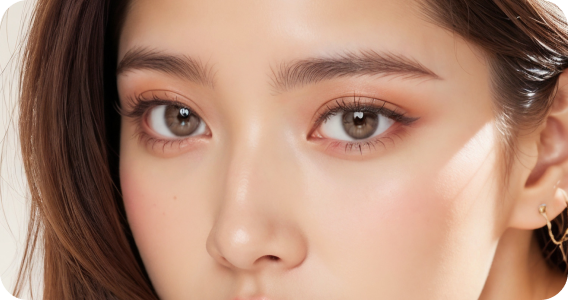

눈성형
자연스럽고 시원한 눈매

셀러블 153 눈성형
풀림, 흉터 걱정 없이 얼굴 전체의 조화를 생각하여
자신에게 가장 어울리는 라인을 만드는 눈성형입니다
자신에게 가장 어울리는 라인을 만드는 눈성형입니다
눈성형 기본 정보
눈성형 대상
-
수술시간30분
-
치료방문1회~2회
-
마취방법수면마취
-
회복기간3일~4일
-
입원입원 없음
-
실밥제거3~5일째
- 미간이 넓어 고민이신 분
- 눈의 좌우 폭이 좁아서 답답해보이시는 분
- 답답한 눈매가 고민이신 분
- 흰 눈동자의 노출이 적어 눈이 몰려보이시는 분
- 검은 눈동자 바깥쪽 흰자위의 노출이 적어 외사시처럼 보이는 분
내 얼굴에 알맞게 남기다, 셀러블153 안면윤곽
심미적으로 완벽한 부분만 깎다. 예쁜 얼굴 라인을 위해 정확한 수술 플랜을 수립하여
신경손상이 적게 뼈의 불필요한 절제없이 꼭 필요한 수술만 진행
신경손상이 적게 뼈의 불필요한 절제없이 꼭 필요한 수술만 진행
- 
- 
셀러블153 눈성형의 특징
-
작고 막힌 눈을 교정하여 크고
시원한 눈으로 변화 -
적은 부기 및 일상으로
빠른 복귀 가능 -
얼굴과 눈의 비율을 고려한 앞, 윗 트임
및 뒤, 밑트임 디자인 -
흉터 최소화를 위해 안쪽으로
절개하여 흉터 예방
자연유착
흉터 걱정 없이 자연스럽게
-
자연유착 매몰법비절개로 진행되며 피부 밑의 조직과 근육에 미세한 구멍을 만들고 실을 연결해 자연스러운 유착을 유도하는 방법입니다. 자연스럽고 흉터 걱정 없는 쌍꺼풀 수술입니다.
-
자연유착 수술방법01. 수술 전 검진 및 충분한 상담을 통해 환자가 원하는 라인을 디자인합니다.
02. 디자인을 따라 7개의 미세 홈을 만들고, 홈을 통해 피부 아래 근육과 일부 조직을 제거하여 자연유착을 유도합니다.
03. 쌍꺼풀 피부와 결막을 통해 실을 두번 통과시켜 쌍꺼풀 라인을 이중으로 고정합니다.
04. 자연스럽고 또렷한 쌍꺼풀 라인을 완성합니다.
-
눈높이에 맞게 라인 디자인
-
미세한 홀을 통해 지방제거 후 피부와 상안검거근 사이의 자연스러운 유착 유도
-
눈꺼풀 안과 밖을 연결
-
흉터 없이 자연스러운 눈매 완성
절개
풀릴 걱정 없이 확실하게
-
트임수술환자 개개인마다 눈의 요소들을 고려하여 쌍꺼풀수술, 눈매교정 등에 트임 수술을 접목해 사방으로 눈매를 확장하여 보다 크고 시원한 눈매를 완성합니다.
-
트임 수술방법01. 수술 전 검진 및 충분한 상담을 통해 환자가 원하는 라인을 디자인합니다.
02. 쌍꺼풀수술(자연유착, 매몰, 절개)을 통해 눈의 상하 길이를 확장합니다.
03. 눈매교정(절개, 비절개)을 통해 눈을 더욱 또렷하고 크게 개선합니다.
04. 눈 상태에 맞는 트임 성형을 통해 눈의 좌우 길이를 확장해 시원한 눈매를 완성합니다.
-
눈높이에 맞게 라인 디자인
-
미세한 홀을 통해 지방제거 후 피부와 상안검거근 사이의 자연스러운 유착 유도
-
눈꺼풀 안과 밖을 연결
-
흉터 없이 자연스러운 눈매 완성
트임성형
답답한 눈을 더 크게
-
트임수술환자 개개인마다 눈의 요소들을 고려하여 쌍꺼풀수술, 눈매교정 등에 트임 수술을 접목해 사방으로 눈매를 확장하여 보다 크고 시원한 눈매를 완성합니다.
-
트임 수술방법01. 수술 전 검진 및 충분한 상담을 통해 환자가 원하는 라인을 디자인합니다.
02. 쌍꺼풀수술(자연유착, 매몰, 절개)을 통해 눈의 상하 길이를 확장합니다.
03. 눈매교정(절개, 비절개)을 통해 눈을 더욱 또렷하고 크게 개선합니다.
04. 눈 상태에 맞는 트임 성형을 통해 눈의 좌우 길이를 확장해 시원한 눈매를 완성합니다.
-
래쉬라인을 움직여 눈꼬리를
부드럽게 교정 -
숨겨진 개구부를 찾아
원하는 눈 모양 완성 -
부드러운 눈꼬리와 원하는
눈 모양을 동시 개선
눈매교정
처진 눈꺼풀 교정
-
눈매교정눈꺼풀의 힘이 약해 눈동자가 반쯤 가려지는 경우 눈매교정을 통해 크고 또렷한 눈매로 개선 할 수 있습니다.
-
트임 수술방법쌍꺼풀 수술만 진행했을 때 01. 수술 전 검진 및 충분한 상담을 통해 환자의 눈꺼풀 상태, 두께, 처짐 정도 등을 확인합니다.
02. 디자인 라인을 따라 눈꺼풀을 절개 후 불필요한 근육이나 지방을 제거합니다.
03. 눈꺼풀 근육의 강화를 위해 근막을 교정하여 근육을 묶거나 절제한 라인을 따라 봉합합니다.
04. 자연스럽고 더욱 또렷한 눈매로 완성합니다. 비절개 눈매교정 01. 수술 전 검진 및 충분한 상담을 통해 환자의 눈꺼풀 상태, 두께, 처짐 정도 등을 확인합니다.
02. 디자인한 라인에 따라 미세구멍을 만듭니다.
03. 눈을 뜨는 근육에 매듭을 지어 근육과 피부를 연결하여 근막을 강화시켜줍니다.
04. 매듭을 연속적으로 묶어준 뒤 마무리하여 보다 또렷한 눈으로 개선합니다.
-
쌍꺼풀 수술만 진행했을 때안검하수의 근본적 원인 해결과 이를 고려하지 많은 채 쌍꺼풀만 만들 경우 눈동자의 노출량 변화가 일어나지 않아 더욱 작고 답답해 보이는 부자연스러운 눈매가 완성됩니다.
-
쌍꺼풀 수술과 눈매교정을 함께 진행했을 때쌍꺼풀과 눈매교정을 동시에 진행할 경우 해당 근육을 끌어 올림으로써 눈동자의 노출량을 증가시켜 시원하면서도 또렷한 눈매를 만들 수 있습니다.
눈꺼풀이 처져 졸려보이거나 이마의 근육을 통해 눈을 뜨는 경우 안검하수 눈매교정으로 개선이 가능하며
쌍꺼풀 수술과 함께 진행할 시 시원하고 또렷한 눈매를 완성함은 물론 자연스러운 쌍꺼풀 라인까지
만들 수 있습니다.
쌍꺼풀 수술과 함께 진행할 시 시원하고 또렷한 눈매를 완성함은 물론 자연스러운 쌍꺼풀 라인까지
만들 수 있습니다.
-
처진 피부와 주름을 동시에 개선할 수 있는 리프팅 수술로 볼륨과 미간 주름까지 개선이 가능합니다.이마거상복원 수술방법
- 헤어라인 안쪽 두피에 1cm의 작은 세로 절개(5군데)
- Full HD 내시경을 통해 두피, 이마, 추미근을 절개 절재하고 유지인대를 박리 후 정수리 뒤쪽에서 부터 당겨주어 이마와 눈썹을 아래로 내려줍니다.
- 당겨내려준 위치에서 다시 두피를 듀얼터널링 실고정법으로 확실하게 고정하여 재교정합니다.
- 눈썹 밑 흉터가 잘 보이지 않는 곳에 5~8mm 정도의 절개를 가하고 내려준 눈썹이 딸려 올라가지 않도록 한번 더 고정해줍니다.
-
처진 피부와 주름을 동시에 개선할 수 있는 리프팅 수술로 볼륨과 미간 주름까지 개선이 가능합니다.눈썹하거상 수술방법
- 헤어라인 안쪽 두피에 1cm의 작은 세로 절개(5군데)
- Full HD 내시경을 통해 두피, 이마, 추미근을 절개 절재하고 유지인대를 박리 후 정수리 뒤쪽에서 부터 당겨주어 이마와 눈썹을 아래로 내려줍니다.
- 당겨내려준 위치에서 다시 두피를 듀얼터널링 실고정법으로 확실하게 고정하여 재교정합니다.
- 눈썹 밑 흉터가 잘 보이지 않는 곳에 5~8mm 정도의 절개를 가하고 내려준 눈썹이 딸려 올라가지 않도록 한번 더 고정해줍니다.
-
처진 피부와 주름을 동시에 개선할 수 있는 리프팅 수술로 볼륨과 미간 주름까지 개선이 가능합니다.눈밑지방 재배치 수술방법
- 헤어라인 안쪽 두피에 1cm의 작은 세로 절개(5군데)
- Full HD 내시경을 통해 두피, 이마, 추미근을 절개 절재하고 유지인대를 박리 후 정수리 뒤쪽에서 부터 당겨주어 이마와 눈썹을 아래로 내려줍니다.
- 당겨내려준 위치에서 다시 두피를 듀얼터널링 실고정법으로 확실하게 고정하여 재교정합니다.
- 눈썹 밑 흉터가 잘 보이지 않는 곳에 5~8mm 정도의 절개를 가하고 내려준 눈썹이 딸려 올라가지 않도록 한번 더 고정해줍니다.
-
처진 피부와 주름을 동시에 개선할 수 있는 리프팅 수술로 볼륨과 미간 주름까지 개선이 가능합니다.상안검/하안검 수술방법
- 헤어라인 안쪽 두피에 1cm의 작은 세로 절개(5군데)
- Full HD 내시경을 통해 두피, 이마, 추미근을 절개 절재하고 유지인대를 박리 후 정수리 뒤쪽에서 부터 당겨주어 이마와 눈썹을 아래로 내려줍니다.
- 당겨내려준 위치에서 다시 두피를 듀얼터널링 실고정법으로 확실하게 고정하여 재교정합니다.
- 눈썹 밑 흉터가 잘 보이지 않는 곳에 5~8mm 정도의 절개를 가하고 내려준 눈썹이 딸려 올라가지 않도록 한번 더 고정해줍니다.
POINT.123
-
POINT셀러블153 눈성형
전담 의료진1숙련된 의료진이 1:1 맞춤 상담을 통해
환자 얼굴의 전체적인 조화를 고려하여
디자인을 진행합니다. -
POINT수술 후 케어
프로그램으로
빠른 회복에 도움2오랜 경험과 축적된 노하우를 통해 조직
손상을 최소화하여 수술을 진행하기 때문에
흉터가 겉으로 드러나지 않는
수술이 가능합니다. -
POINT짧은 수술 시간과
빠른 일상 회복3꼼꼼하고 노련한 수술 실력으로
수술 시간이 짧아, 멍과 부기가
적어 빠른 일상 회복을 할 수 있습니다.